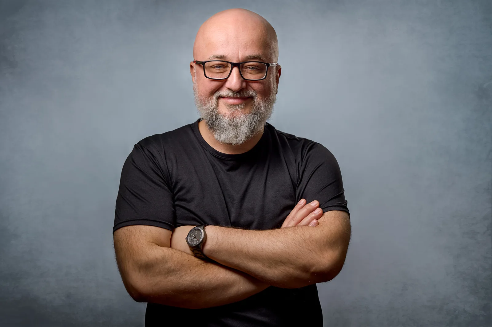
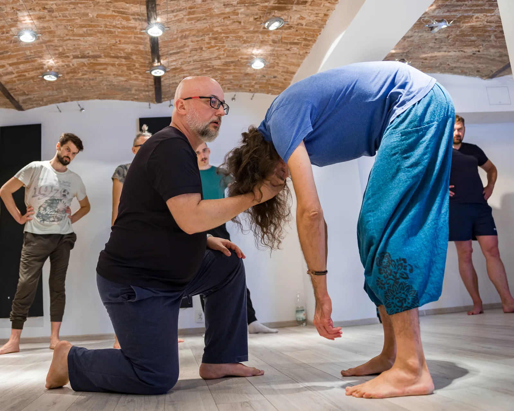

Psycholog · psychoterapeuta
Ciało pamięta to,
o czym głowa nauczyła się milczeć.
Pracuję z ludźmi, którzy wiedzą o sobie dużo i wciąż czują niewiele. Analiza bioenergetyczna Lowena, ISTDP i praca z męskimi archetypami — indywidualnie od 2009 roku, w grupach od 2015.

Jak pracuję
Trzy drogi do tego samego miejsca
Pierwsza zaczyna się od oddechu i napięcia w mięśniach. Druga od tego, co dzieje się między nami w trakcie rozmowy. Trzecia od pytania, która z męskich energii w Tobie milczy. Wszystkie prowadzą tam, gdzie uczucie zostało kiedyś odcięte, bo było za duże.
Analiza bioenergetyczna Lowena
Praca przez ciało: oddech, ruch, ugruntowanie, dźwięk. Nie opowiadasz o emocji — dochodzisz do niej przez napięcie, które ją trzyma. To metoda dla ludzi, którzy w gabinecie potrafią wszystko elegancko wytłumaczyć i nic przy tym nie poczuć.
ISTDP — terapia krótkoterminowa
Intensywna psychoterapia dynamiczna. Pracujemy z lękiem i z obronami w czasie rzeczywistym, w kontakcie. Format krótszy niż klasyczna terapia, za to gęstszy — wymaga gotowości, żeby zostać przy czymś niewygodnym dłużej niż minutę.
Psychologia głębi i archetypy
Jung, za nim Moore i Gillette: Wojownik, Kochanek, Mag, Król. Cztery energie, które w każdym mężczyźnie układają się inaczej i inaczej się zacinają. Traktuję je jak mapę — nazwanie tego, co się dzieje, bywa pierwszym ruchem, który cokolwiek rusza z miejsca.
Kalendarz
Nadchodzące warsztaty
LOWEN for MEN — Mój męski ród i ja
Trzy dni pracy z ciałem i emocjami w męskiej grupie. Flagowy warsztat.
Cena Early Bird do 25 sierpniaWarsztat dla kobiet
Ta sama metoda, pierwszy raz otwarta dla kobiet. Grupa kameralna.
LOWEN for MEN — edycja jesienna
Druga tegoroczna edycja warsztatu męskiego.
LOWEN for MEN Advanced
Sześć dni wyjazdowej pracy pogłębionej. Wyłącznie dla absolwentów.
Głosy uczestników
„Udało mi się odpakować rzeczy, których nie odpakowałem nigdzie indziej.”Grzegorz · uczestnik LOWEN for MEN

Oferta
Gdzie możemy się spotkać
LOWEN for MEN
Flagowy warsztat pracy z ciałem i emocjami dla mężczyzn. Osobna strona.
lowenformen.pl ↗ 02LOWEN for MEN Advanced
Praca pogłębiona dla tych, którzy przeszli podstawowy warsztat.
Czytaj dalej 03Warsztat dla kobiet
Ta sama metoda, otwarta teraz również dla kobiet.
Czytaj dalej 04Trening terapeutyczny
Mała grupa, osiem osób. Praca indywidualna na tle grupy.
Czytaj dalej 05Terapia indywidualna
Sesje ISTDP online, po polsku i po angielsku.
Czytaj dalej 06Męskie archetypy — kurs wideo
Osiem modułów o Wojowniku, Kochanku, Magu i Królu. Bez sali, we własnym tempie.
Zapisz się na wieści o kolejnej edycji 07Szkoła Męskich Grup
Dwie edycje rocznego szkolenia dla prowadzących grupy męskie. Archiwum.
ArchiwumPierwszy krok jest rozmową, nie deklaracją
Konsultacja trwa pięćdziesiąt minut i służy jednemu: sprawdzeniu, czy to, co robię, jest tym, czego potrzebujesz. Jeśli nie — powiem to wprost i pomogę poszukać dalej.